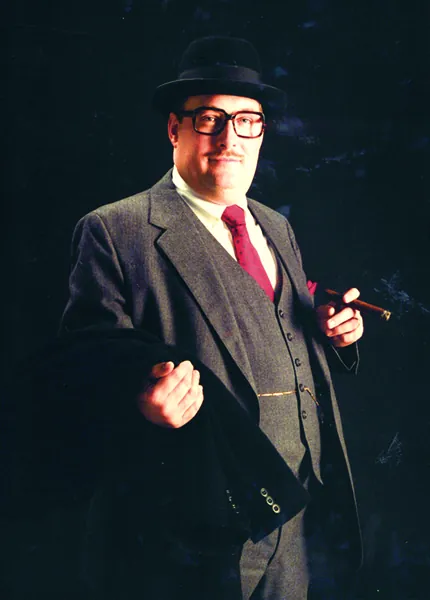

Wine, cognac and cigar gifts from Don’s cellar and humidor
Don’s idea of a good afternoon ended with a cigar and a glass of something good. These are his family’s picks, in his spirit.
This page is for adults 21 and over. Please enjoy responsibly.

Wine
For the tailgate, the trophy toast or the evening after.
Asset #15Charles’s picks for wine
Cognac
Don listed cognac among life's finer pleasures, right after cigars.
Asset #15Charles’s picks for cognac
Cigars
The cigar in the Don's Picks badge is no accident.
Asset #15Charles’s picks for cigars
Wine and spirits are for adults 21 and over; please drink responsibly. Cigars are for adults 21 and over. Cigar smoking can cause cancers of the mouth and throat, even if you do not inhale.
Asset #18The wine, cognac and cigar retailers’ affiliate programs. Read each program’s compliance terms before its links go in.